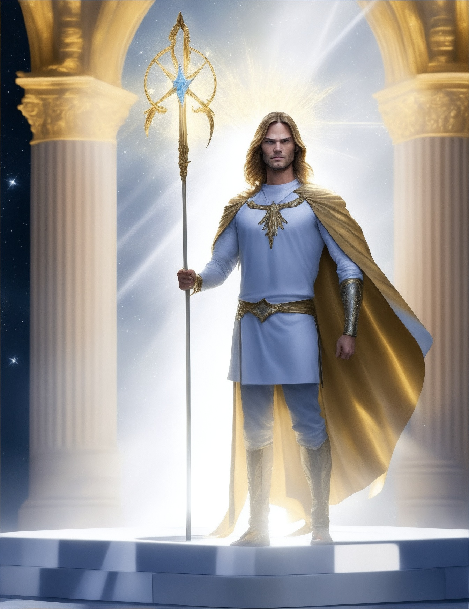
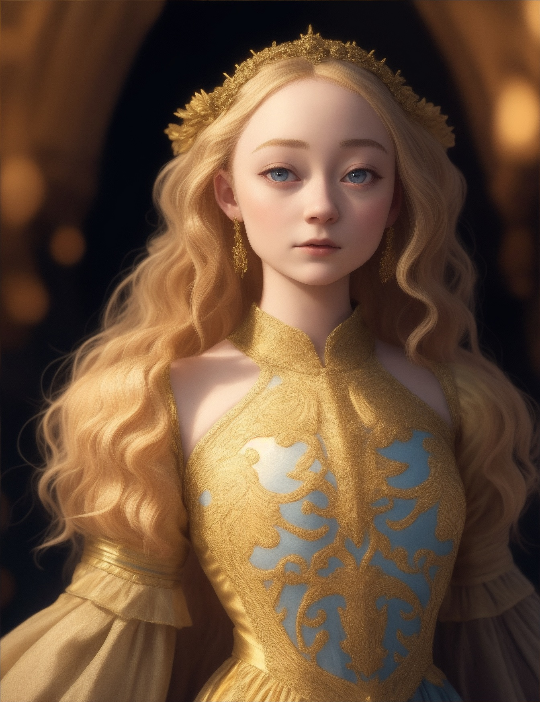

В древние времена, около 11 000 лет назад, на Землю приземлился космический корабль, несущий на борту колонистов с далекой планеты. Эти колонисты были не простыми людьми, а магическими существами, обладающими невероятными способностями, в чьих силах было контролировать даже силы природы и менять реальность. Они называли себя Советом Богов, и с самого момента высадки их присутствие изменило ход истории Земли.
Совет Богов состоял из двенадцати главнокомандующих, каждый из которых взял под контроль одну из частей суши, разделив Землю на двенадцать частей. Эти правители были не только могущественными магами, но и обладали долгой жизнью — они жили в несколько раз дольше, чем обычные люди, и казались бессмертными. Их магия позволяла им манипулировать временем и пространством, и многие из них создавали потомков как от магов, так и от смертных существ, потому что дети, рожденные от союза с людьми, считались важными для эволюции их магических способностей.
Но, несмотря на их почти божественную власть, Совету Богов не удавалось избежать внутренних конфликтов. Некоторые из магов вступали в браки и связи между собой, стараясь сохранить чистоту своей крови и силы. Другие, напротив, искали романтические отношения с простыми смертными, что стало причиной разделений и напряженности в Совете. Их союз был не вечен, и по мере времени магия, даже у самых могущественных из них, начала слабеть. Их потомки, полукровки, теряли силу, а магические способности становились все менее эффективными.
Со временем, когда последний из членов Совета Богов пал, чистокровные маги и полукровки разделились на два враждующих лагеря. Полукровки, уверенные в своей высшей эволюционной ступени, начали истреблять чистокровных, утверждая, что именно они должны править миром. Истребление было долгим и жестоким, но в итоге чистокровные, понимая, что их дни сочтены, научились скрываться. Они скрылись в самых недоступных уголках Земли, и их следы исчезли, оставив лишь мифы и легенды, рассказанные по всему миру.
Одна из таких легенд гласит, что Совету Богов принадлежали не только магия и могущество, но и нечисть, созданная ими. Зачем? Никто точно не знает. Возможно, для защиты, возможно, от скуки, или же для того, чтобы создать превосходящую расу, которая могла бы заменить людей. Но что действительно известно, так это то, что эта нечисть стала частью туманной истории магов, и ее роль в этих событиях оставалась загадкой.
Сегодня, спустя тысячелетия, немногие знают о существовании Совета Богов, их магии и созданных ими созданиях. Но одна вещь остается неизменной: следы их присутствия все еще скрыты в глубинах истории, в заброшенных местах и забытых уголках мира. И среди людей, живущих в современном мире, ходят слухи о тех, кто все еще ищет древние тайны, и о машинах и артефактах, которые могли бы принадлежать тем временам...